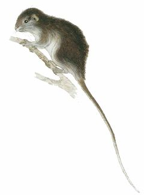
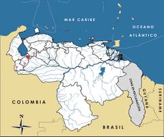

Olallamys edax
| Rata de bambusales | |
|---|---|
|  | |
| Riesgo de extinción | |
 Vulnerable (UICN) | |
| Clasificación científica | |
| Reino: | Animalia |
| Filo: | Chordata |
| Clase: | Mammalia |
| Orden: | Rodentia |
| Familia: | Echimyidae |
| Género: | Olallamys |
| Especie: | Olallamys edax |
| Nombre binomial | |
|
Olallamys edax Thomas, 1916 | |
| Distribución | |
|
 Mapa de distribución de Olallamys edax | |
Contenido
Información de Evaluación
- Categoría y Criterio Regional: Vulnerable D2
- Fecha de Evaluación Regional: 2015
- Evaluadores: Jesús Morales-Campos y Ariany García-Rawlins
- Categoría y Criterio Global: Datos Insuficientes
Justificación
Evaluaciones Previas
1999: Datos Insuficientes (DD)
2008: Vulnerable (VU)
Información General
Nombres comunes
Rata de bambusales, rata de bambusales de Mérida, conocono de los chusques oriental, greedy olalla rat, Venezuelan soft-furred spiny rat.
Notas taxonómicas
Sinónimos
Descripción
Rata arborícola de tamaño grande, cuya longitud desde la cabeza hasta la base de la cola alcanza unos 23 cm. Su cola es gruesa y 1,5 veces más larga que el cuerpo, con un aspecto desnudo, bicoloreada y en su tercio final enteramente blanca. Tiene un pelaje largo, algo rígido, con el dorso de color pardo amarillento; su vientre es más claro y blancuzco en la línea media. Este tono ventral blanco se extiende hasta la garganta, los cachetes y la barbilla. La cabeza es similar en color al dorso, con el rostro cubierto por pelos grises que le dan una tonalidad grisácea jaspeada. Vibrisas muy numerosas y largas. Orejas medianas, desnudas, redondeadas y algo elevadas, sin pasar del perfil lateral de la cabeza. Manos y patas cubiertas por pelos cortos amarillentos, con las plantas pardas oscuras. De hábitos nocturnos, arbóreos y solitarios, su dieta es folívora, sobre todo especializada en hojas y tallos de bambú. En Colombia se ha reportado que de noche puede revelar su presencia mediante fuertes silbidos (Thomas 1916, Linares 1998).
Distribución
La especie fue descrita por un ejemplar colectado en la sierra de Mérida a 2800 m de altitud, lo que constituye el único registro existente en Venezuela hasta la fecha. También ha sido reportada en los Andes de Colombia cerca de Bogotá (Eisenberg 1989, Linares 1998). El género abarca solo otra especie, Olallamys albicauda, de la cordillera Central de Colombia. Vive en bosques montanos densos, en particular en los bambusales en torno a las quebradas andinas, donde se alimenta de hojas, tallos del bambú y otros vegetales, al igual que Dactylomys dactylinus, una especie muy relacionada con Olallamys, que se distribuye al sur de la Amazonía venezolana (Linares 1998). El nombre original del género, Thrinacodus, fue reemplazado por Olallamys, debido a que el primer nombre fue utilizado previamente para un tiburón (Emmons 1988).
- Sistema: Terrestre
- Bioregión:
- Intervalo altitudinal (m): 2800
- Endémica: Sí
Situación
Olallamys edax es una de las especies de roedores más enigmáticas de Venezuela. Se trata de un endemismo andino descrito hace casi un siglo, y que desde entonces no ha sido detectado en el país, a pesar de intensos estudios recientes en la región, en especial los realizados por los investigadores de la Universidad de Los Andes. Cabe entonces suponer que pudiera tratarse de una especie ya extinta. Por otra parte, puede ser que sea naturalmente muy escasa y de difícil detección y colecta (a pesar de su mediano tamaño), debido a su actividad nocturna, arborícola y a lo intrincado de su hábitat, en bambusales montanos. Es interesante señalar que el holotipo de la especie fue cazado con escopeta en horas de la noche, cuando el método más frecuente de inventarios de roedores se basa en trampas, que podrían no ser efectivas para Olallamys edax (Linares 1998, IUCN 2014). Internacionalmente se le clasifica en Datos Insuficientes (IUCN 2014). Aunque no ha sido incluida en el Libro rojo de los mamíferos de Colombia, algunos autores han propuesto su inclusión en la Lista Roja en la categoría Datos Insuficientes (Rodríguez, J. V. 1998, Rodríguez-Mahecha et al. 2006). Se propone que es Vulnerable a nivel nacional, pero su situación podría ser aún más grave (Rodríguez, J. P. y Rojas-Suárez 2003).
- EOO (km2): Temporalmente sin información
- AOO (km2): <20
- Tendencia Poblacional: Desconocida
Amenazas
El taxón es especialista de hábitats boscosos andinos densos e inalterados con parches naturales de bambúes. Esta especialización podría significar que está amenazada ante todo por la pérdida, fragmentación y el deterioro de los ecosistemas naturales de la cordillera de Mérida, y por fuegos, plantaciones forestales y deforestaciones con fines agropecuarios y urbanísticos, debido a la demanda creciente de comunidades humanas en la región andina.
Conservación
No se cuenta con medidas específicas para su conservación. Algunos hábitats de la especie en el estado Mérida pueden estar protegidos por el parque nacional Sierra Nevada. Dado que la información disponible sobre su distribución, abundancia y biología es precaria, la primera prioridad sería una investigación a fondo para aportar losa datos necesarios y posteriormente definir de forma objetiva su distribución actual, ecología y estatus de conservación, a fin de implementar medidas para el resguardo y recuperación de este roedor tan peculiar de las selvas andinas. Es probable que el registro de sus silbidos característicos pueda facilitar su detección y monitoreo. Es obvio, además, que cualquier medida efectiva para la protección de los bosques montanos merideños también la favorecerían.
Autorías
Autores originales
Juhani Ojasti
Colaboradores
Ilustrador
Víctor Pérez
Referencias
- Eisenberg, J. F. (1989). Mammals of the Neotropics. The Northern Neotropics (Vol. 1). Panamá, Colombia, Venezuela, Guyana, Suriname, French Guiana. University of Chicago Press. Chicago y Londres. 449 pp.
- Emmons, L. H. (1988). Replacement name for a genus of South American rodent (Echimidae). Journal of Mammalogy 69: 421.
- IUCN (2014). The IUCN Red List of Threatened Species. Version 2014.3. Accesible en www.iucnredlist.org.
- Linares, O. J. (1998). Mamíferos de Venezuela. Sociedad conservacionista Audubon. Caracas. 691 pp.
- Ojasti, J. (2015). Rata de bambusales, Olallamys edax. En: J.P. Rodríguez, A. García-Rawlins y F. Rojas-Suárez (eds.) Libro Rojo de la Fauna Venezolana. Cuarta edición. Provita y Fundación Empresas Polar, Caracas, Venezuela. Recuperado de: animalesamenazados.provita.org.ve/content/rata-de-bambusales Lun, 02/04/2018 - 14:17
- Rodríguez, J. V. (1998). Listas preliminares de Mamíferos Colombianos con algún riesgo a la extinción. Informe Final presentado al Instituto de Investigación de Recursos Biológicos Alexander von Humboldt [en línea]. Disponible en www.humboldt.org.co, consultada el 23 de octubre de 2006.
- Rodríguez, J. P. y Rojas-Suárez, F. (1999). Libro Rojo de la Fauna Venezolana, segunda edición. PROVITA, Fundación Polar. Caracas. 444 pp.
- Rodríguez, J. P. y Rojas-Suárez, F. (2003). Libro Rojo de la Fauna Venezolana (2a ed. reim.). Provita, Fundación Polar. Caracas. 472 pp.
- Rodríguez, J. P. y Rojas-Suárez, F. (Eds.) (2008). Libro Rojo de la Fauna Venezolana, tercera edición. Provita y Shell Venezuela, S. A. Caracas, Venezuela. 364 pp.
- Rodríguez-Mahecha, J. V., Alberico, M., Trujillo, F. y Jorgenson, J. (Eds.) (2006). Libro Rojo de los Mamíferos de Colombia. Serie Libros Rojos de Especies Amenazadas de Colombia. Conservación Internacional, Ministerio del Ambiente, Vivienda y Desarrollo Territorial. Bogotá, Colombia. 433 pp.
- Thomas, O. (1916). Some notes on the Echimyidae. Annals and Magazines of Natural History (Series 8) 18: 294-301.